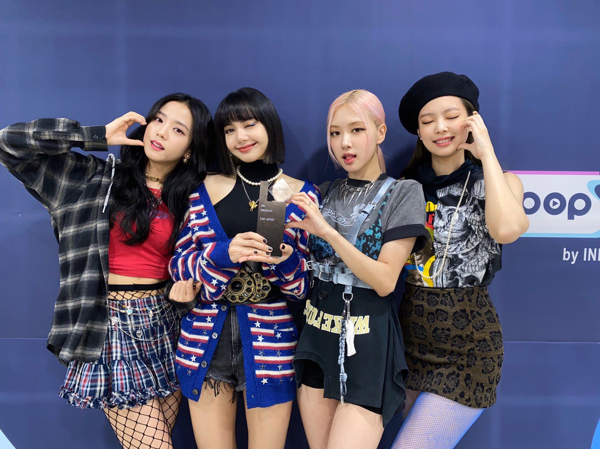

With promotional preparation beginning in November 2011 with the revelation of an teaser image of Kim Eun-bi, who was speculated as a candidate for the group's line-up, YG Entertainment revealed the final line-up and name of the group on June 29, 2016. BLACKPINK is the first girl group to debut under YG Entertainment in seven years, after 2NE1's debut. They debuted with the single album Square One on August 8, 2016. The first title track, "Whistle ," was a "minimal hip-hop track," and was produced by Teddy Park and Future Bounce, and written by Teddy Park and Bekuh BOOM. The second title track, "Boombayah ," was produced by Teddy Park and co-written with Bekuh BOOM. Its music video was directed by Seo Hyun-seung. Their debut singles hit number one on the Billboard World Digital Songs chart and the fastest act to do so, and only the third Korean artist to hold the top two positions after Psy and Big Bang. "Whistle" topped the digital, download, streaming and mobile chart of Gaon Chart of August 2016. They also reached number one on the weekly, popularity, music video, and K-pop music video chart of China’s biggest music-streaming website QQ Music. BLACKPINK first music show performance was aired on August 14, 2016 on SBS's Inkigayo. Their win in Inkigayo broke the record for girl group with the shortest time to win on a music program after debut (14 days). They wrapped up their promotions for Square One on September 11, 2016 with another win on Inkigayo. BLACKPINK released their second single album Square Two with the lead singles "Playing With Fire" and "Stay " on November 1, 2016. The songs are similarly produced by Teddy with R.Tee and Seo Won Jin.They performed their comeback stage in SBS Inkigayo on November 6 and in Mnet M!'Countdown on November 10, 2016. "Playing with Fire" was their second single to hit number one on the Billboards World Digital Songs Charts. On May 16, 2017, it was announced that Black Pink will debut in Japan in summer 2017, holding a debut showcase on July 20 at the Nippon Budokan in Tokyo and releasing a mini album on August 9. A snippet of the music video for the Japanese version of "Boombayah" was aired on TV in Japan on May 17.
About
